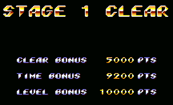

The High Score Foundation is a collection of video game enthusiasts, who are dedicated to preserving what's dear to us: our high scores. With many of today's games omitting scores altogether, high scores are becoming endangered. Our goal is to collect and preserve the games of yesterday so we can always hold that number 1 spot on the list.
Who Are We
What Is A High Score?
In video games that features a scoring, points are usually an optional, side component of gaming. Players may achieve points through normal gameplay, but their score will often not have an immediate relevance to the game itself. Instead, playing to beat a "high score" set by the game program, another player or onself becomes an extra challenge, adding replay value.
In modern gaming, the presence of a score is not ubiquitous as in the past. Instead during the era of arcade games, when, because of the technical limitations of the time, games could not be "won" or "completed" but were instead endless cycles of continuous gameplay, points had a much greater relevance. Many modern games no longer even keep track of score, and many that do no longer feature an option to save or record high scores. However, some games (particularly role-playing games) have experience points, skill points, and use money (or treasure) which can all be used to buy/upgrade skills/objects, but these are not really considerable scores, being embellishments to their "growing" characters instead of the numerical evaluation of their gaming performance in a given match.
Sometimes the score of a game can have relevance to gameplay. In fighting games, for example, scoring a very high number of points could result in unlockable players or modes. In some games, reaching certain scores gives an extra life, or a continue.
Scoring
In puzzle games, scores are usually gained by solving the puzzles quickly. Higher scores can be gained by performing combos of puzzle solving. There is often a time bonus which can add extra points. The level number is often a multiplier on the points, so higher scores are possible on harder levels. Level multipliers can also be picked up in some games, to further multiply your points bonus.
In other games, points are typically gained from defeating monsters and enemies. When defeating a boss, a proportionally large number of points is usually rewarded. Extra points can be gained from gathering items, such as power-ups or other pick-ups.
Usually, when a player gets a certain number of points, they may get an extra life or go on to a higher level. Points can be often used as currency which can redeemed for rewards and player upgrades.
High score
The high score of a video game is usually the highest logged point value. Many times a game will have a list of several high scores, called the high score table. Read More Here »